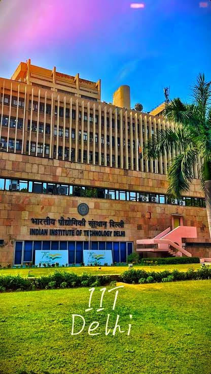

About Indian Universities
Indian universities and institutes offer education in engineering, science, medicine, business, arts, and many other subjects.
Popular Universities and Institutes
- Indian Institute of Technology Bombay
- Indian Institute of Technology Delhi
- Indian Institute of Science Bangalore
IIT Bombay
IIT Bombay is a famous institute located in Mumbai. It is known for education, research, and technology.
IIT Delhi

IIT Delhi is a well-known institute located in New Delhi. It offers education and research in many fields.
Indian Institute of Science
The Indian Institute of Science, also called IISc, is located in Bengaluru. It is known for science, engineering, and research.
Why Study at These Institutions?
- Good education
- Research opportunities
- Many career opportunities
- Modern facilities